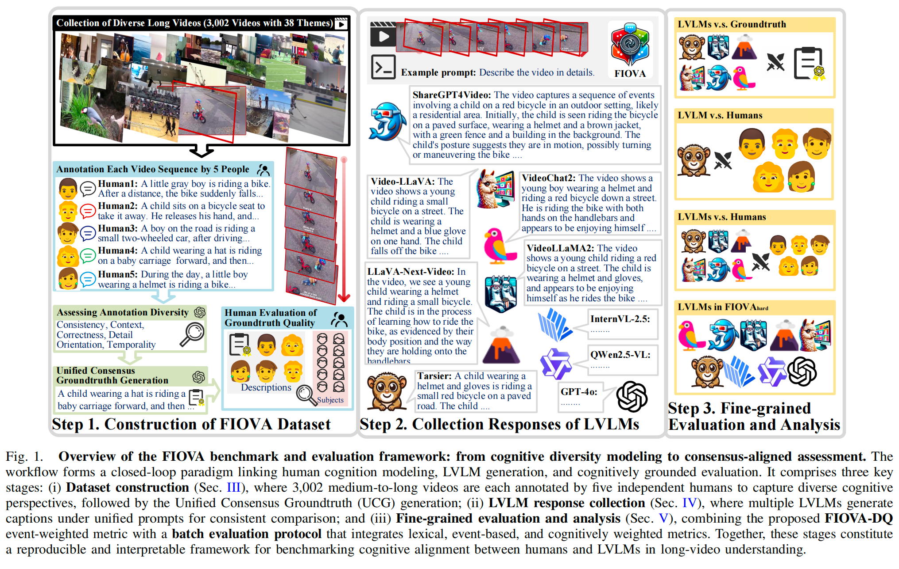
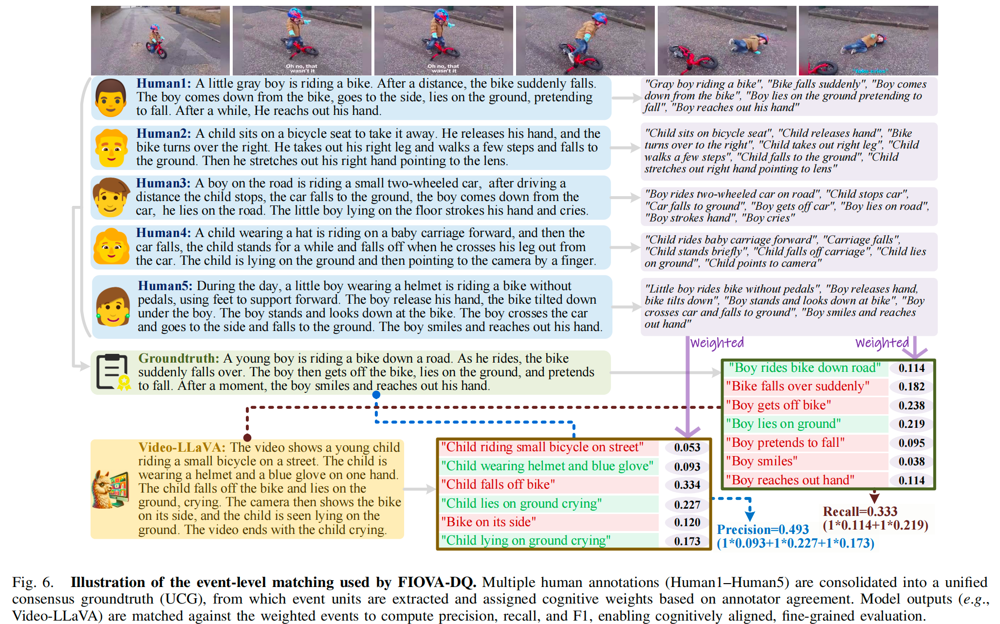
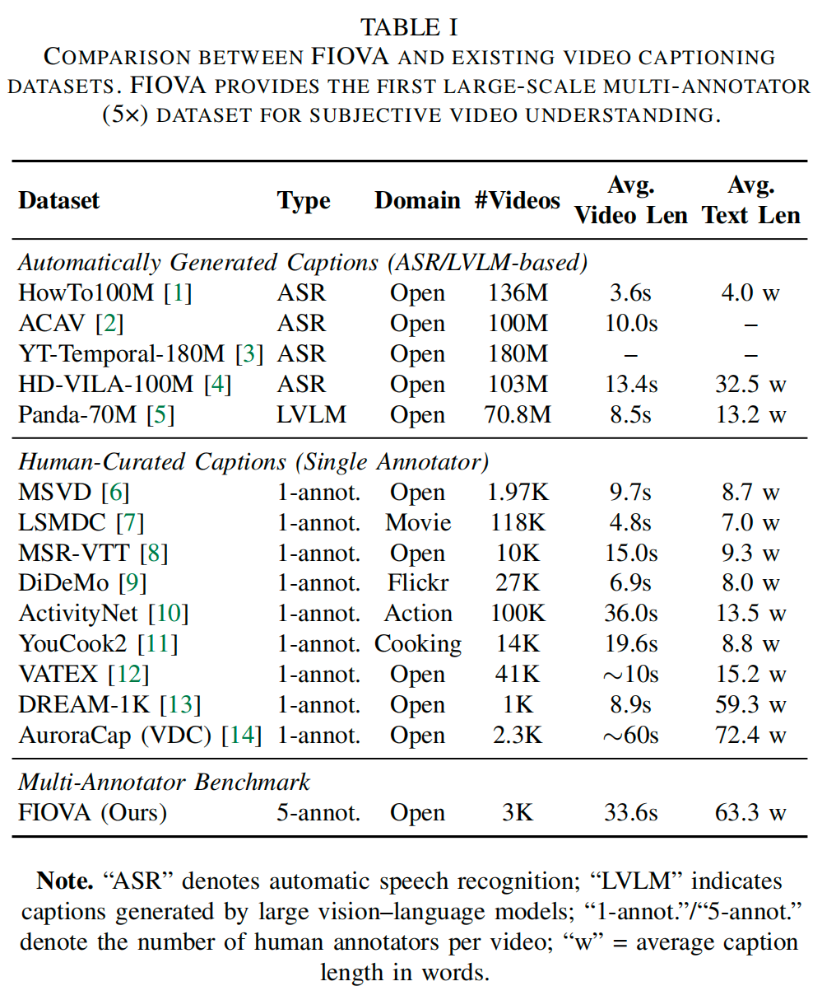
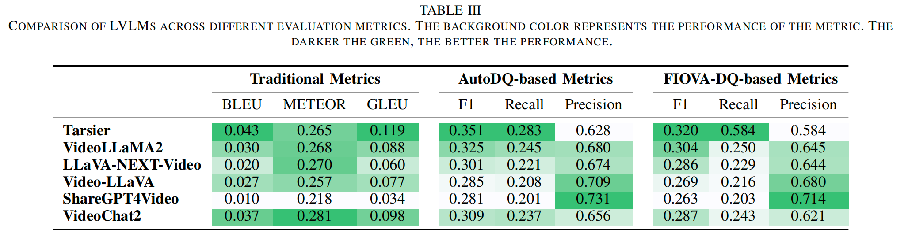
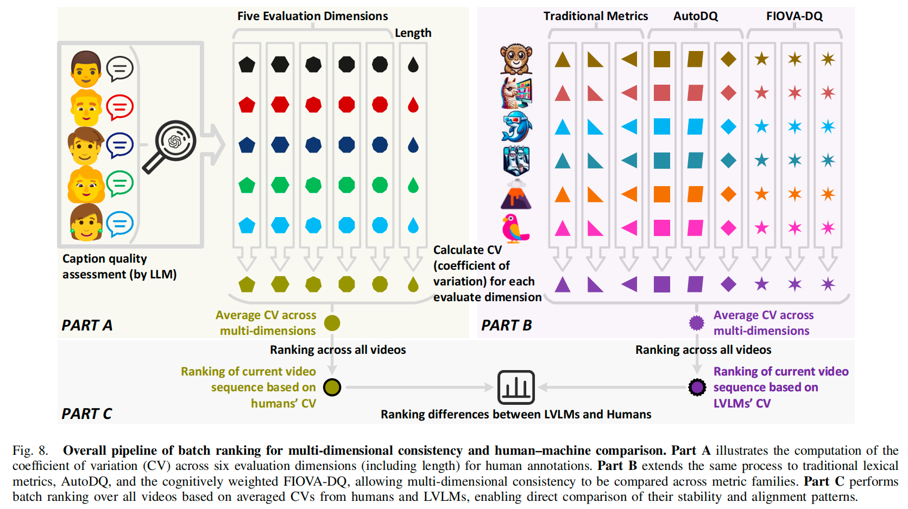
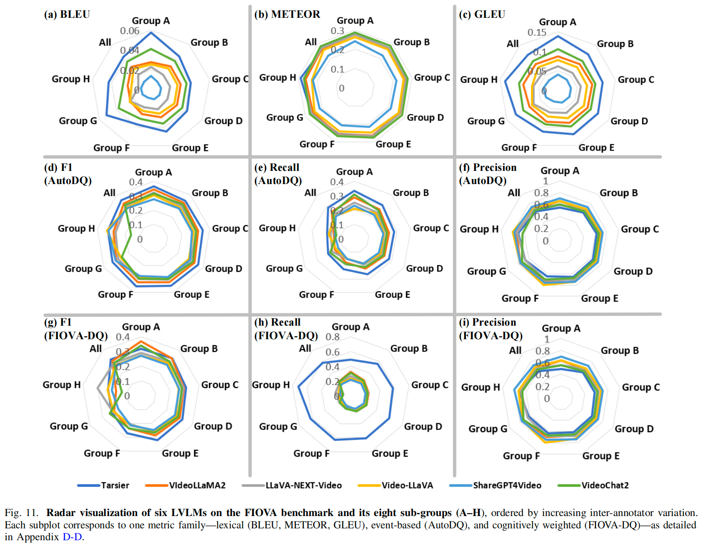
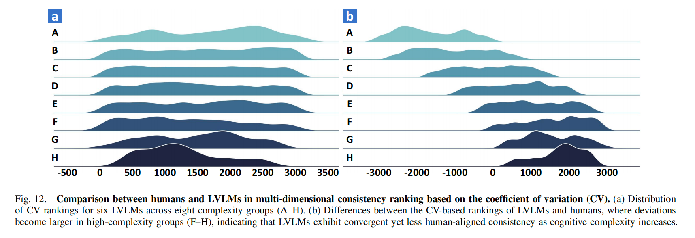
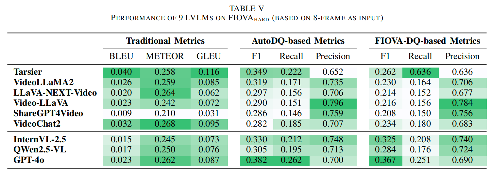
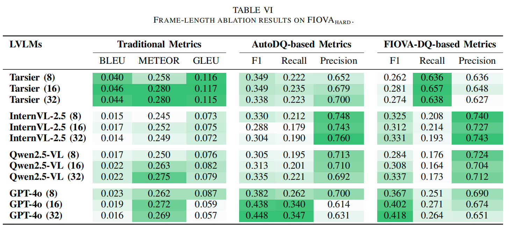
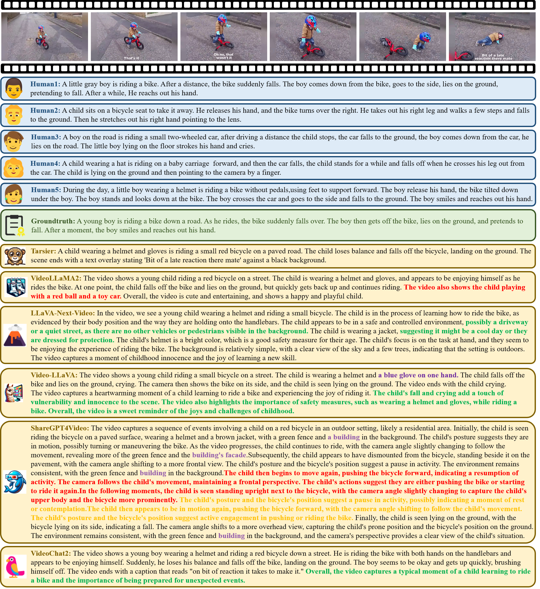

Evaluating large vision-language models (LVLMs) for long-video understanding remains challenging, as human interpretations of the same content differ in attention, segmentation, and expression.
This diversity highlights the limitations of traditional single-reference or lexical metrics that fail to reflect both variation and consensus in human understanding.
To address this issue, we propose a cognitively grounded group-consensus evaluation paradigm that models objectivity through quantified human consensus. Within this paradigm, we construct FIOVA (Five-In-One Video Annotations), a benchmark of 3,002 medium-to long-duration videos, each annotated by five humans to represent distinct cognitive perspectives. Through a Unified Consensus Groundtruth (UCG) process, these heterogeneous annotations are merged into stable and interpretable consensus anchors that connect subjective diversity with reproducible evaluation.
Building on this foundation, we design FIOVA-DQ, an event-weighted metric that integrates human attentional weighting to achieve cognitively faithful alignment between LVLM outputs and human consensus. Experiments on nine representative LVLMs reveal a consistent complexity compression effect: as semantic complexity increases, human descriptions become more diverse while model outputs converge toward uniform templates, indicating a structural gap between adaptive human cognition and regularized model reasoning.
FIOVA provides a reproducible and cognitively interpretable framework that unifies human diversity and consensus in evaluation, offering a principled basis for advancing LVLMs' cognitive alignment.
(1) Paradigm and Benchmark: We establish a cognitively grounded group-consensus paradigm that treats subjectivity as a structured, learnable distribution rather than random annotation noise. Under this paradigm, we construct FIOVA, a large-scale 5× multi-annotator benchmark of 3,002 videos (average duration 33.6s), where a Unified Consensus Groundtruth (UCG) process captures both cognitive diversity and convergence. This paradigm bridges the cognitive gap between algorithmic objectivity and human subjectivity, transforming evaluation from textual alignment to cognitive alignment.
(2) Evaluation Framework: We develop FIOVA-DQ, an event-weighted metric that introduces human-derived attentional weighting to evaluate fine-grained cognitive alignment between LVLM outputs and human consensus. We further design a batch evaluation protocol that integrates lexical, event-based, and cognitively weighted metrics for distribution-level assessment of model robustness and human–machine coherence. This framework establishes a closed-loop connection between human cognition modeling, LVLM response generation, and cognitively interpretable evaluation.
(3) Systematic Analysis: Through extensive evaluation on nine representative LVLMs (VideoLLaMA2, Video-LLaVA, LLaVA-NEXT-Video, Tarsier, VideoChat2, ShareGPT4Video, InternVL-2.5, Qwen2.5-VL, and GPT-4o) across varying levels of semantic and narrative complexity, we reveal the complexity compression effect: as video complexity increases, human annotations diversify while model outputs converge toward template-like regularities. This phenomenon reflects a structural misalignment between adaptive human cognition and over-regularized model reasoning, highlighting cognitive alignment as a critical frontier for long-video evaluation.
Operationalizing cognition. FIOVA (Five-In-One Video Annotations) is designed to capture the subjectivity–consensus duality of long-video understanding. We curate 3,002 medium-to-long videos spanning 38 themes, and ask five independent annotators per video to describe the visual stream (audio is removed). This yields 15,010 human captions plus 3,002 consensus references, providing a dual-axis view of subjective diversity (individual captions) and shared cognition (consensus anchors).
Pipeline from distribution to consensus. The construction pipeline combines multi-human annotation, strict quality control, and cognitive stratification before synthesizing a Unified Consensus Groundtruth (UCG) for each video. An LLM-mediated procedure semantically fuses the five captions into a stable, neutral reference that preserves cross-annotator invariants while minimizing stylistic bias. Manual audits confirm that the UCG balances detail, temporal logic, and factual fidelity, making it a reliable cognitive anchor for evaluation (see the illustration below).

Quantifying cognitive variability. To turn disagreement into a measurable signal, we score every human caption along five semantic dimensions—consistency, context, correctness, detail orientation, and temporality—and combine with caption length tocompute a composite coefficient of variation (CV). The resulting distribution defines eight cognitive strata (Groups A–H) that range from high consensus to high divergence. We designate FIOVAhard as Groups F–H, which exhibit frequent scene transitions, multi-perspective narratives, and low human agreement, providing stress tests for cognitively demanding scenarios.
Statistics and coverage. FIOVA’s paragraph-level captions average 63.3 words—4–15× longer than existing benchmarks (Table 1)—and exhibit rich correlations with video duration and event density. Word clouds contrasting individual annotators with the UCG reveal how consensus emphasizes core events while retaining stylistic dispersion. Together, these statistics show how FIOVA covers both the breadth of human perception and the depth of shared understanding, laying the foundation for cognitively grounded evaluation in next section.

Building on the human consensus references from Step 1, we collect LVLM-generated captions under harmonized conditions. We evaluate nine representative models that span prevailing design families: six open-source systems—VideoLLaMA2, Video-LLaVA, LLaVA-NEXT-Video, Tarsier, VideoChat2, and ShareGPT4Video—plus three proprietary or frontier models—InternVL-2.5, Qwen2.5-VL, and GPT-4o (the latter restricted to FIOVAhard). All models follow a unified prompt template and are supplied with identical 8-frame clips, ensuring fair comparison across architectures.
Inference settings are harmonized whenever interfaces permit: a maximum output length of 1,024 tokens, model-specific decoding parameters (for example, temperature 0.2 for VideoLLaMA2, 1.0/0.9 top-p for VideoChat2 and ShareGPT4Video, 0.1 for Video-LLaVA, and deterministic decoding for Tarsier and LLaVA-NEXT-Video) and fixed random seeds. This protocol yields 18,012 video–caption pairs that align human references with machine summaries, capturing heterogeneous verbosity and reasoning styles that serve as inputs for cognitively aligned evaluation.
To probe robustness under high cognitive divergence, we additionally evaluate the frontier models on FIOVAhard (Groups F–H), which comprise videos with multi-perspective narratives, rapid transitions, and low human agreement. This stress-test subset, together with the full corpus, enables nuanced analysis of model behaviour across semantic complexity levels.
The resulting response collection underpins the cognitively aligned evaluation framework detailed below, allowing us to study human–model alignment across linguistic, structural, and cognitive dimensions.
We link human consensus cognition to LVLM behaviour through a three-layer evaluation stack. At the linguistic layer, conventional metrics such as BLEU, METEOR, and GLEU offer reproducible surface-level comparison between model outputs and human references. The structural layer adopts event-based AutoDQ to decompose captions into aligned event units, enabling explicit reasoning about semantic coverage and narrative ordering. Building upon this representation, the cognitive layer introduces FIOVA-DQ, which weights events by human attentional agreement so that cognitively central information contributes more strongly to precision, recall, and F1.
Table 3 summarises the tri-layer results. Models such as Tarsier excel in recall-oriented behaviour under AutoDQ and FIOVA-DQ, demonstrating strong event coverage but lower precision due to over-generation. ShareGPT4Video shows the opposite tendency, producing concise descriptions with high precision yet sacrificing recall. VideoLLaMA2 and LLaVA-NEXT-Video fall between these extremes, highlighting trade-offs that become visible only when lexical, structural, and cognitive views are analysed together.
Importantly, FIOVA-DQ achieves the strongest correlation with human preference (Spearman ρ = 0.579), validating the role of cognitive weighting in capturing human judgments. This layered framework therefore provides both fine-grained diagnostic information and an aggregated view of human–model alignment.
By fusing lexical overlap, event-structured analysis, and human-attention weighting, the framework extends beyond traditional metrics and lays the groundwork for distribution-level diagnostics introduced next.

To complement per-caption metrics, we analyse stability at the batch level using the coefficient of variation (CV). Human annotations are first evaluated across six cognitive dimensions (Consistency, Context, Correctness, Detail Orientation, Temporality, and Length) to obtain per-video CVs. These values define eight cognitive strata (Groups A–H), ranging from high consensus to high divergence, which act as a graded measure of semantic complexity.

Applying the same CV analysis to LVLM outputs across the linguistic, structural, and cognitive metric families yields model-side stability scores. Figure 11 reports these results, revealing distinct behavioural strategies: Tarsier prioritises recall and achieves high weighted F1 across most strata, whereas ShareGPT4Video favours precision at the cost of coverage. All models experience pronounced drops in Group H, confirming the difficulty of cognitively complex, low-agreement videos.
Figure 12 further compares the human and model rankings induced by these CV scores. The observed ranking gaps quantify how far model stability patterns drift from human regularities: LVLMs display higher variability on simple videos (Groups A–B), whereas humans diverge more in complex scenarios (Groups F–H). This batch-ranking perspective pinpoints where models revert to template-like summaries instead of mirroring the adaptive diversity of human cognition.

Taken together, the CV-based diagnostics highlight the need for cognitively aligned evaluation: even when average scores appear comparable, human–machine stability differences persist across complexity levels, motivating further analysis in the following sections.

We evaluate nine LVLMs on FIOVAhard—Groups F–H with high inter-annotator divergence—to stress-test cognitive robustness. Table 5 shows that baseline models drop substantially when subjectivity rises: for instance, VideoChat2’s FIOVA-DQ F1 decreases from 0.287 (full set) to 0.234, with Recall falling from 0.243 to 0.180. Video-LLaVA exhibits a similar degradation, revealing difficulty in maintaining narrative continuity across long, ambiguous sequences. In contrast, Tarsier retains recall-oriented resilience (Recall = 0.636) but its Precision (0.152) depresses the overall F1 to 0.262, indicating coverage without filtering cognitively salient content. ShareGPT4Video behaves oppositely—Precision 0.756 but Recall 0.150—reflecting an overly cautious decoding strategy that omits contextual information. These patterns expose the lack of a balancing mechanism between completeness and selectivity under uncertainty.
Among large-scale systems, GPT-4o delivers the best cognitive–linguistic balance (FIOVA-DQ F1 = 0.367), sustaining interpretive breadth while preserving precision. InternVL-2.5 and Qwen2.5-VL achieve higher precision (0.740 and 0.724) yet lower recall, revealing fact-centric strategies that sacrifice narrative coherence. The comparison underscores that scaling alone does not guarantee adaptability; temporal grounding and reasoning design remain decisive for coping with ambiguous scenes.

We also vary input length on representative models (Table 6). GPT-4o benefits most from temporal expansion: its FIOVA-DQ F1 improves from 0.367 (8 frames) to 0.418 (32 frames), with Recall rising from 0.251 to 0.264. Qwen2.5-VL exhibits a similar upward trend, whereas InternVL-2.5 peaks in Precision (0.743) at 32 frames and Tarsier maintains stable Recall (~0.64) across lengths. Longer contexts thus enhance robustness but intensify the Precision–Recall trade-off, revealing each model’s effective cognitive bandwidth.

The multi-layer evaluation reveals a structured performance landscape: LVLMs align along a precision–recall continuum that reflects distinct reasoning preferences. Tarsier pursues recall-oriented coverage (Recall 0.636 on FIOVAhard) at the expense of cognitive precision, whereas InternVL-2.5 and Qwen2.5-VL emphasise factual accuracy (Precision 0.740/0.724) but lose narrative breadth. GPT-4o attains the most balanced F1 (0.367), indicating emergent self-calibration between detail and coherence, yet still falls short of human adaptability.
Human preference studies corroborate this picture: FIOVA-DQ (Spearman F1 = 0.579) approximates human rankings far better than AutoDQ (0.125), demonstrating that cognitively weighted scoring captures salience, causality, and contextual relevance—the dimensions humans prioritise when describing long videos.
CV-based analyses expose a cognitive compression effect. As ambiguity increases, human annotators diversify their descriptions, whereas LVLMs converge on deterministic, template-like outputs. Caption-length correlation studies (see Appendix) and the ranking gaps in Fig. 8 show that models stabilise surface form instead of expanding reasoning pathways, revealing limited meta-cognitive adaptability under uncertainty.
Error inspections reinforce this interpretation: ShareGPT4Video hallucinated redundant details, while Tarsier omitted pivotal events, indicating brittle causal abstraction. Models handle low-entropy scenes reliably but collapse in multi-perspective narratives, suggesting reliance on pattern continuity rather than situational inference.
Finally, the integrated methodology—traditional metrics, AutoDQ, FIOVA-DQ, and batch-ranking—links measurement with mechanism. It transitions evaluation from aggregate scores to behavioural diagnosis, pinpointing where LVLM stability diverges from human interpretive flexibility and guiding future model design toward cognitively coherent reasoning.
The following examples illustrate five common error types in LVLM-generated captions, each highlighted using a specific color:
By categorizing and visualizing these errors, we provide a structured lens for analyzing the reliability of model-generated descriptions, and offer diagnostic insights into improving future LVLM performance.

Analysis:
Human performance in video description tasks demonstrates remarkable consistency, especially in simpler scenarios where humans can effectively capture key content and provide accurate descriptions with minimal variation. In contrast, LVLMs exhibit significant limitations in these scenarios, often struggling to identify critical details and failing to match human descriptive ability. This discrepancy stems from the models' inability to fully comprehend the overall context and integrate video events with background information, which are essential for accurate and coherent descriptions. Among the LVLMs, models like LLaVA-NEXT-Video, Video-LLaVA, and VideoChat2 frequently exhibit issues of redundancy in their outputs. ShareGPT4Video shows pronounced hallucinations and repetitive descriptions, further highlighting its challenges in maintaining precision. Tarsier, while avoiding hallucination and excessive redundancy, suffers from omissions, such as neglecting the actions occurring after the boy lies on the ground. These findings underscore the persistent gap between LVLMs and human performance, particularly in scenarios requiring detailed understanding and contextual integration.